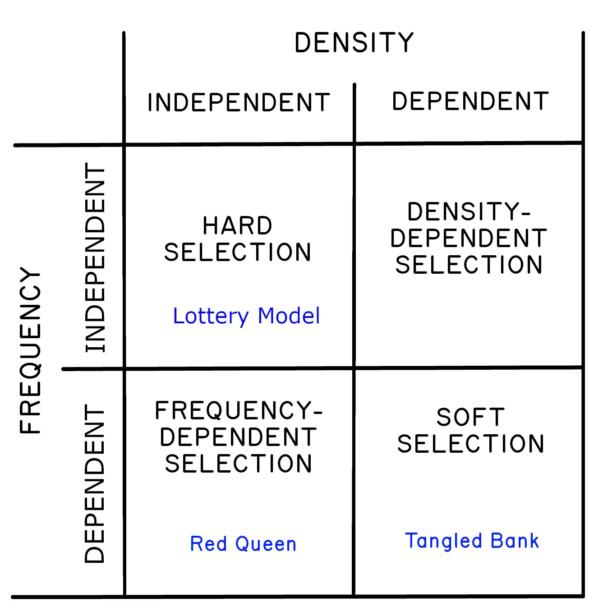
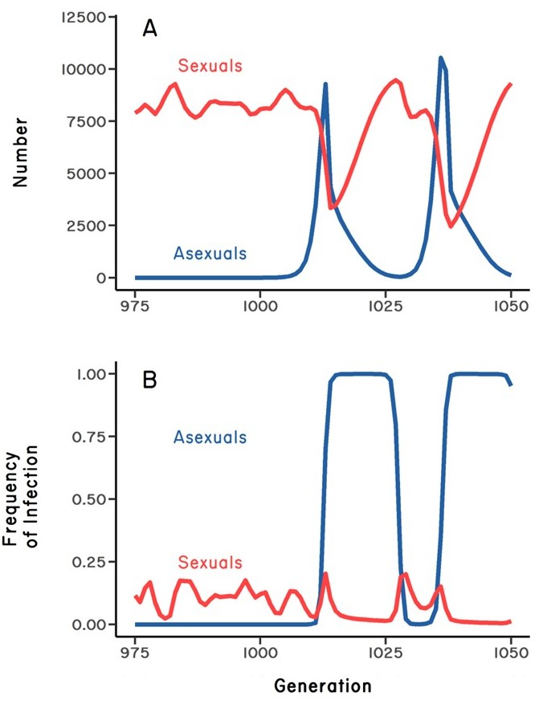
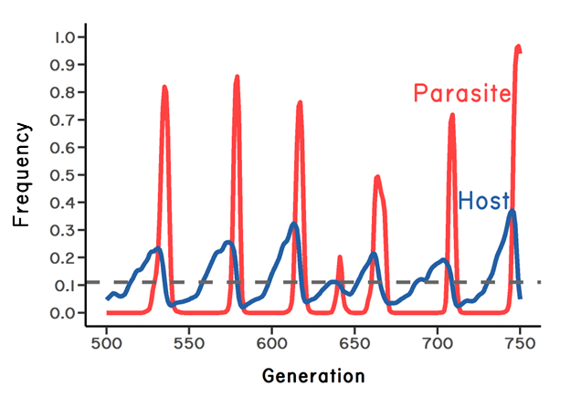
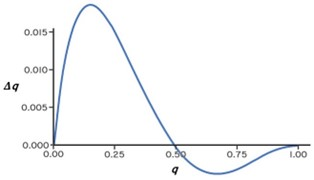

2 The Ecological Hypotheses

The sex/recombination (“sex/rec”) anomaly has attracted some of the best theoretical biologists over the last 50 years, leading to at least two dozen hypotheses to explain selection for recombination and/or the persistence of obligate sexual reproduction in natural populations (Kondrashov 1993). In what follows, I first focus on the ecological hypotheses. The ideas underlying these hypotheses provide a handle for understanding some of the foundational concepts in evolutionary ecology.
2.1 The Lottery Model
As part of his book on the evolution of sex, Williams (1975) suggested that sex could be favored in fluctuating abiotic environments. The idea is intuitive: cross-fertilization generates variation among offspring. Hence, in fluctuating environments, sex could increase the probability that some offspring might survive. Williams likened the idea to a unique kind of lottery. For example, he wrote: “Suppose you were offered this choice in a lottery: either you could have several different tickets, or you could have the same number of copies of the same ticket” (p. 15). If you choose N copies of the same ticket (asex), and your ticket wins, you get N times the reward. If you choose N different tickets (sex), you increase the probability of winning something, but the reward is smaller. Williams referred to the idea as the aphid-rotifer model, but the idea has since come to be known as the Lottery Model (following Bell 1982), which is a more descriptive phrase.1
In my evolution course, I ask a form of Williams’ question, but with a slight twist:
If you had a garden, upon which your descendants will depend for many generations to come, would you
- plant a genetically variable crop, or
- a monoculture with a two-fold higher yield?
Keep in mind that your descendants will follow your choice.
Often the students rightfully want some clarification. They ask, for example, “Can we use pesticides?” But every time, most students choose the variable crop. I remind them that selecting the variable crop will reduce their yield by one half. They don’t budge. I re-ask the question, doubling the relative yield for the monoculture from two-fold to four-fold. Then to 10-fold. Occasionally, one of the more risk-prone students will select the 10-fold higher yield, but most do not budge. They want genetic variation. I ask them why. Invariably, they say that the environment is going to change. They want to hedge their bets against an uncertain future.
Indeed, Williams’ Lottery Model is about bet hedging. The gist of bet-hedging in evolutionary theory is that selection can act to reduce the variance in reproductive success over time, even if it also reduces the arithmetic mean across years (review in Philippi and Seger 1989). Suppose, for example, that we have the following data for both a monoculture and a genetically variable polyculture (in arbitrary units). Let’s assume that the variation in yield is driven by annual variation in abiotic factors, such as temperature or precipitation. The effect of planting a polyculture (bet-hedging) can be estimated from the geometric mean, which incorporates the variation in yield over time.
| Year | Monoculture | Polyculture |
|---|---|---|
| 1 | 350 | 250 |
| 2 | 400 | 250 |
| 3 | 300 | 200 |
| 4 | 100 | 200 |
| 5 | 50 | 200 |
| Arithmetic mean | 240 | 220 |
| Variance2 | 19400 | 600 |
| Geometric mean (GM)3 | 184 | 219 |
| Approximate GM | 200 | 219 |
In this example, we find that the monoculture has an arithmetic mean of 240, while the polyculture has an arithmetic mean of only 220. So, I might be inclined to plant the monoculture. However, the among-year variance is very high for the monoculture (relative to the polyculture), driven in large part by the low yields in years 4 and 5. By contrast, the geometric mean for the monoculture is 184, while the geometric mean for the polyculture is 219. Based on this, I might be inclined to plant the polyculture, as it reduces the cost of very low yield in bad years. I think the students see this intuitively. Over the long term, it is better to be risk-averse and plant the genetically variable polyculture. What if, for example, the monoculture produced no food in the last year? The geometric mean would be zero. That would be catastrophic.
The effect of variance on the geometric mean (GM) can be seen by an approximation (Stearns 2000):
\[\text{GM} \approx \overline{x} - \frac{\text{var}(x)}{2\overline{x}}\]
where \(\overline{x}\) is the mean, and var(\(x\)) is the variance in \(x\). Note that the approximation is equal to the arithmetic mean when the variance in \(x\) is zero. Note too that the geometric mean increases as the variance in \(x\) decreases. So, if selection operates to reduce the among-year variance in fitness, the outcome of selection will be reflected by an increase in the geometric mean. In general, evolutionary biologists use the geometric mean (rather than the arithmetic mean) to measure fitness over time.4
Can sex be favored in variable environments as a bet-hedging strategy? It seems like a very sensible idea, provided that the production of genetically variable progeny reduces the among-year variance in offspring survival. But remember, that under a two-fold cost of sex, asexuals can replace large populations of sexuals in tens of generations (see chapter 1). So, if the Lottery Model is correct, significant environmental change must occur very rapidly. The many thousands of years between ice ages, for example, would be too long.
2.2 The Tangled Bank/Frozen Niche-Variation Model
Roughly speaking, the Lottery Model concerns the value of producing diverse offspring in a temporally variable abiotic environment. A different kind of model instead concerns the role of competition for different resource types that vary in space. Let us first consider the Frozen Niche-Variation Hypothesis of Robert Vrijenhoek. The key idea is that the clonal derivatives of sexual ancestors “freeze” some of the genetic variation in the sexual population. This frozen genotype then determines the resource niche of the clone. It seems reasonable to assume that the niche width of a single clone would be relatively narrow compared to the niche width of the genetically diverse sexual population. So, under this idea, a clone could invade a sexual population, and perhaps displace it from one of its many niches. But a single clone could not completely replace the sexual population (Vrijenhoek 1979). This kind of process could explain those situations in which sexual and asexual females coexist, which was a major advance.5
A conceptually similar model was independently developed by Graham Bell: the Tangled Bank Hypothesis (Bell 1982). Bell nabbed the name from the last paragraph of the Origin of Species, in which Darwin imagines life as an “entangled bank” of species interacting in a complex network. The core of the idea can be traced back to Howard Levene’s (1953) pioneering model, which showed that polymorphism could be maintained in a spatially heterogeneous environment provided that different genotypes specialize on different resources. Levene’s model was a major advance, as it showed that genetic diversity could be maintained without heterozygote advantage (Box 2.1). This was also one of the first models to fuse population genetics with ecology. But how does multiple niche polymorphism apply to sex? The idea is that, if selection results in polymorphism, then a genetically diverse sexual population might be resistant to replacement by a clonal lineage that specializes on only one of the available resource types (as also in the Frozen Niche-Variation Model).
Here is how I pose the Tangled Bank idea to my undergraduate students. I start by giving them a choice between two hypothetical resources, which occur in different parts of the room. One is pizza, the other is broccoli. They all choose pizza. The problem, of course, is that the per-person value of the pizza resource declines as the pizza-eating population grows. At some point, there will be an advantage to specializing on broccoli. This could lead to a polymorphic population composed of obligate pizza eaters and obligate broccoli eaters, where (at equilibrium) the value of both resources is the same. Hence, selection for or against a particular strategy depends on the frequency of that strategy in the population. Perhaps this kind of frequency-dependent selection could favor sexual reproduction as a way to diversify offspring in environments where different resource types are patchily distributed in space. This reasoning forms the essence of the Tangled Bank Hypothesis.
One especially interesting aspect of the Tangled Bank Model is that the strength of frequency-dependent selection depends on population density. For example, there would be no selection to utilize the resource of lower value (broccoli) if there were no competition for pizza. This kind of selection, where the advantage to being rare depends on population density, is sometimes referred to as “soft” selection (Wallace 1975).6 In other words, soft selection is selection that is both frequency-dependent and density-dependent. This idea contrasts nicely with the Lottery Model, where selection is both frequency- and density-independent, which is called “hard” selection. For our purposes, we can use Wallace’s terminology to conceptually separate the Tangled Bank Hypothesis from the Lottery Model Figure 2.1.

We can think of the contrast like this. Under the Lottery Model, changes in the environment will select against certain genotypes independent of whether they are common or rare. Selection seems unconditional (hard). Under the Tangled Bank, selection is always conditional (soft); there is an advantage to having a rare genotype, but this advantage only accrues under strong competition (high density). Soft selection may not be exactly the best possible phrase, but it contrasts nicely with hard selection.7
Two caveats are worth mentioning with respect to soft selection and the Tangled Bank Hypothesis. One is that polymorphism is only stable under a narrow range of patch-types frequencies. In addition, strong tradeoffs are required for the cost and benefits for morphs occupying different patches (Maynard Smith and Hoekstra 1980, Lively 1986a) (see also Box 3.1). The second caveat is that repeated mutation to asexual reproduction could lead to the accumulation of clonal diversity over time. Once all the niches are occupied by different specialized clones, there would be no advantage to sex. A diverse clonal population could then replace the sexual population (Bell 1982, Vrijenhoek and Parker 2009). This second caveat applies, in general, to any model of sex that relies on frequency-dependent selection. But the ideas could work if mutations to asex are rare. And, as I mentioned, sexuals and asexuals are known to coexist in some populations, which is consistent with the Tangled Bank and Frozen Niche-Variation Hypotheses (Vrijenhoek and Parker 2009). Coexistence, however, is also compatible with the Red Queen hypothesis, which we will now consider.
2.3 The Red Queen Hypothesis
The Red Queen Hypothesis is like the Lottery Model in that it focusses on environmental change over time. However, under the Red Queen idea, the change is mediated by changes in coevolving biological antagonists such as parasites, rather than changes in the abiotic environments.8 The distinction is important, as we will see.
It may be helpful to revisit Figure 1.2, which shows the replacement of a sexual population by a clonal lineage within 25 generations. In this example, the clone was a single genotype, while the sexual population was composed of multiple recombining genotypes, only one of which was shared with the clone. Clearly, as the clone spreads, its genotype would become the most common in the host population. Now suppose that the host population is coevolving with a parasite population, which is composed of multiple strains. Assuming random contact between hosts and parasites, the parasite strain that could infect the most common host genotype would have a selective advantage over parasite strains that could only infect rare host genotypes. Let’s call this more successful parasite strain “strain A.” What would happen? It should be easy to see that strain A would increase in frequency. The parasite population would evolve.
Now, what if the parasite dramatically reduces the reproductive success of infected hosts? We might expect that, as the parasite evolves to infect the most-common host genotype, the reproductive advantage of the host clone is eroded. Moreover, if the parasite is common and sufficiently virulent, evolution by the parasite could prevent the clone from eliminating the sexual population. Under this scenario, there are at least two possible outcomes. One is that the sexuals and asexuals come to exist in stable frequencies, where the lost fecundity of the clone due to infection is equal to the cost of males, meaning that the mean fitnesses of sexuals and asexuals are equal. On the other hand, if the parasite is highly virulent, the frequencies of sexuals and asexuals can oscillate over time (Figure 2.2 A). Under this second scenario, the new clone initially increases, but it is driven down sharply by infection (Figure 2.2 B). Then, once the clone becomes very rare, it should become less infected than observed in the sexual population (Figure 2.2 B). During this period, there is parasite-mediated selection against sex. Hence, the clone increases in frequency (Figure 2.2 A), only to be driven down again by parasites after it becomes common (Figure 2.2 B). Another cycle begins. The key point is that parasites do not select against clonal reproduction per se; they only select against common genotypes. But selection against common host genotypes might be sufficient to prevent fixation of a clone in the short term.

This scenario of fluctuating selection for and against sex is just a special case of the more general idea that parasites will select against common genotypes within a diverse, sexual host population. As a rare host genotype becomes common, the parasites genotype that can infect it will be favored by natural selection. If the parasite is virulent (meaning that infection reduces host fitness), the targeted host genotype will decline in frequency, and a new host genotype will begin to increase in frequency. Under this logic, host-parasite coevolution will lead to the oscillation of genotypes in both the host and the parasite populations (Figure 2.3). These oscillations are now called Red Queen dynamics. Red Queen dynamics can lead to the maintenance of genetic polymorphism in sexual populations, and possibly protect sexual reproduction from replacement by asexual lineages. In addition, Red Queen dynamics could also favor recombination within a sexual population (Peters and Lively 1999, Schmid-Hempel and Jokela 2002, Peters and Lively 2007, Salathe et al. 2008). These related ideas are now called the Red Queen Hypothesis (following Bell 1982).

2.3.1 An intersection of science and literature
The name for the Red Queen Hypothesis comes from Through the Looking Glass (Carroll 1872). Here are the relevant bits of the story. After Alice goes through the looking glass (a mirror), she decides to follow a straight path to the top of a hill. But, in following the path, she ends up at her starting point. Talking to herself, she remarks, “But how curiously it twists! It’s more like a corkscrew than a path.” Repeated attempts were unsuccessful. In frustration, Alice addresses a tiger lily amongst a patch of flowers, “I wish you could talk!” The lily informs Alice that all the flowers can talk. The stunned Alice then begins a conversation with the flowers before finally asking, Are there more people in the garden besides me? The rose answers yes, there is someone like you. Alice sets out to follow this person (the Red Queen), but she quickly loses sight of her, and ends up back at her original starting point. Flustered, Alice decides to follow the advice of the rose: “I should advise you to walk the other way.” Alice then quickly finds the Red Queen.
Now it gets especially interesting. Alice mentions to the Red Queen that she would like to “find my way to the top of the hill.” The Red Queen replies: “I could show you hills in comparison with which you’d call that a valley.” Alice protests: “a hill ca’n’t be a valley… That would be nonsense.” This exchange between Alice and the Red Queen now seems prophetic, because, under frequency-dependent selection, locations on the adaptive landscape can rapidly change from fitness peaks to fitness valleys. Perhaps the Red Queen’s statement is correct: hills can become valleys, and valleys can become hills. More specifically, genotypes that were favored by natural selection when rare can become selected against after they become common, leading to a highly dynamic adaptive landscape.
In any case, Alice had clearly entered a crazy world. Straight paths become like corkscrews, progress is made by going the other way, and hills become valleys. Then, suddenly, Alice and the Red Queen began to run: “Alice never could quite make out, in thinking afterwards, how it was that they began: all she remembers is, that they were running hand in hand, and the Queen went so fast that it was all she could do to keep up with her.” During this furious run, Alice notices that they never pass anything. The trees remain in the same place as if they were moving along with them. Alice eventually asks: “Are we nearly there?” The Red Queen replies: “Why, we passed it ten minutes ago! Faster!”
When they finally stop, Alice is surprised to be where they started: “I do believe we have been under this tree the whole time! Everything is just as it was!” The Red Queen replies that of course, and then asks: “What would you have it?” Alice replies that she would have expected to get somewhere else after running for a long time. The Red Queen then replies with this very famous quote: “Now, here, you see, it takes all the running you can do to keep in the same place.” It is a perfect metaphor for host-parasite coevolution9. Host and parasite genotypes might oscillate as if they were running to stay in the same place.
It seems unlikely that Lewis Carroll had coevolution in mind when writing these passages. But he was a mathematician at Oxford University (his given name was Charles Dodgson), and at least one author has shown how his writings can be seen as metaphors for mathematical problems (Bayley 2009, 2010). Along these lines, mathematician Sanderson M. Smith has suggested that Carroll simply inverted the equation for speed from “speed = distance/time” to “speed = time/distance”. Upon rearrangement, the latter gives “distance = time/speed.” Hence you must run very fast to stay in the same place. But how does the shifting landscape fit in? And why did Alice have to go the other way to meet the Red Queen? I would love to know.
It is perhaps worth pointing out that the phrase “Red Queen Hypothesis” can have two different meanings to evolutionary biologists. In the early 1970s, Leigh van Valen was grappling with data showing that the probability of extinction in very different organisms was independent of the age of the lineage. He reasoned that, in coevolutionary interactions, the probability of one species driving the other species extinct could, in fact, be independent of lineage age (Van Valen 1973). It thus seems reasonable to suggest that both antagonists must run (coevolve) as fast as they can to prevent extinction. Graham Bell repurposed the phrase to mean within-population oscillations in host and parasite genotypes (Bell 1982). Hence, Van Valen’s idea is about macroevolution (speciation/extinction), while Bell’s idea is about microevolution. Even though van Valen’s use of the Red Queen metaphor was published first, I will use Bell’s microevolutionary meaning, as it perfectly captures the oscillating nature of genotype frequencies during host-parasite coevolution.10
2.3.2 Conceptual roots of the Red Queen Hypothesis
Part of my goal is to show science as a process. As such it seems reasonable to discuss the origins of the Red Queen idea. One of the earliest statements alluding to the Red Queen Hypothesis came from W.D. Hamilton (1975). Hamilton was reviewing the books by Williams (1975) and Ghiselin (1974) for the Quarterly Review of Biology. Throughout the review, the reader can feel Hamilton’s frustration with their arguments. Towards the end, he makes this very abstract suggestion: “…it seems to me that we need environmental fluctuations around a trend line of change” and “For the source of these we may look to fluctuations and periodicities … generated by life itself.”
The quote does not specifically refer to parasites, but it does suggest that coevolutionary interactions, in general, could play a role in selecting for sex and recombination. In his memoirs, Hamilton clears this up, writing: “At that stage when I wrote the review, although I had not seen the particular relevance that parasitism might have, I had for many years seen sex looming ahead and had reached a stage of being excited by the possible primary role of biotic interaction. I had decided that it was in aspects of the interspecies struggle, and not survival in an inanimate environment, that I had to search for the main factor. Adaptation to new physical habitats might be made possible through sexuality but these adaptations could not be the main reason for its existence (Hamilton 2001).”
Note that, here, Hamilton is specifically contrasting host-parasite coevolution with the Lottery Model, which relies on random changes in “physical habitats.”
At about the same time, a plant population biologist, Don Levin, was also writing on the paradox of sex/rec. In his paper, Levin specifically identified pathogens as a possible force selecting for recombination (Levin 1975): “I propose that the persistent tracking of plant hosts by multiple pathogens and herbivores is a prime factor which prohibits the congealing of the genomes of species, especially those in closed communities.”
Boom! By “prohibit the congealing of genomes,” Levin means, “selects for recombination.” The reference to “closed communities” means species that are tightly coevolving in the absence of homogenizing gene flow. This quote seems to be the first to specifically identify coevolving pathogens as a primary source of selection favoring the mixing of genomes. Levin’s idea was quickly followed by important conceptual contributions by Glesener & Tilman (1978)11, Jaenike (1978)12, and Lloyd (1980). In particular, Lloyd writes: “… biological interactions are more likely than unpredictable physical conditions to provide the kind of relentless, repetitive change that is necessary for sexual parents to be selected because of the genetic diversity that sex engenders.”
Lloyd then turns this abstract idea into a specific prediction, which I would later test: “If this proves to be so, we will then be able to examine whether the occurrence of asexual reproduction is correlated with relaxation of the biological hostility of the environment.” Notice that, in the quotes presented above, both Hamilton and Lloyd were specifically predicting that coevolution is more important in selecting for sex than uncertain physical environments. But it is reasonable to ask, does it really matter? Aren’t both ideas fundamentally about bet hedging in uncertain environments? Yes: I think both ideas are about bet hedging. But the distinction still matters. The Lottery Model is about random shifts in the direction of selection; there is no selection against common genotypes unless the environment changes by chance in a way that disfavors them. By contrast, under the Red Queen, selection is frequency dependent. In fact, selection against common genotypes is the core of the model. Hence, the critical difference between the models is not so much about bet hedging but whether selection for sex/rec is directional (but randomly changing directions, a lottery) or frequency dependent (Red Queen). For example, parasites could be a source of directional selection for sex if they randomly changed which host genotypes they attacked. To my mind, that would be a Lottery Model. The Red Queen Hypothesis requires frequency-dependent selection generated by interactions between species.13 This is an important distinction.
Taking this view, the Red Queen Hypothesis may seem more closely related to the Tangled Bank model than to the Lottery Model, as both the Red Queen and the Tangled Bank rely on frequency-dependent selection. But the critical distinction here is that selection against common genotypes under the Tangled Bank relies on intraspecific competition in populations at carrying capacity (soft selection). The Red Queen relies on interspecific antagonistic coevolution, leading to parasite-mediated selection against common host genotypes.14
In any case, looking back, it seems clear that the architects of the ecological hypotheses had two inter-related things in mind:
- How can we explain sex/rec, and
- How do we understand the biogeographic and phylogenetic distributions of asexual reproduction?
As an evolutionary ecologist, I was drawn to the confluence of these questions. But other ideas were also interesting, such as the idea that sexual reproduction is favored because it reduces the interference between alleles at different loci (review in Otto 2021). I will cover some special cases of this latter idea in Chapter 4.15
2.4 Summary
Three ecological hypotheses have been proposed to explain the persistence of cross-fertilization in the face of competition with uniparental reproductive strategies such as parthenogenesis or self-fertilization (following Bell 1982).
The Lottery Model is based on the possible advantages of diversifying offspring facing uncertain changes in the abiotic environment. Here selection is independent of both density and frequency.
The Tangled Bank and Frozen Niche-Variation Hypotheses are based on competition for resources when multiple resource types co-occur. Selection is frequency dependent, but the advantage to rare types only occurs when intraspecific competition is intense.
The Red Queen Hypothesis relies on parasite-mediated selection against common host genotypes. Such selection, when strong, can result in oscillatory changes in parasite and host alleles. These oscillations are sometimes called Red Queen dynamics.
A bet-hedging strategy reduces the variance in reproductive success over time, even if it reduces the arithmetic mean. Sexual reproduction under the Lottery Model is clearly a bet-hedging strategy. The Red Queen idea can perhaps also be seen as bet hedging.
It was widely thought that heterozygote advantage was required to maintain polymorphism at a single locus with two alleles. In the introduction to his paper, Levene wonders “…whether it was in fact possible to have an equilibrium without the heterozygote being superior in any single niche.” The paper is not easy to follow, even though the algebra is not difficult. Here I try to simplify the presentation.
Levene first assumes that the proportion of survivors coming from the \(i^{th}\) niche is constant \((q)\), independent of the genotypic composition of the niche (i.e., soft selection). He then assumes that the heterozygote has a relative fitness of 1 in all niches, giving \(W_{AB} = 1\). Let \(q\) be the frequency of allele A, and let (\(1 - q\)) be the frequency of allele B. The frequency of allele A in the next generation, \(q'\), is then
\[q^{'} = \sum_{}^{}c_{i}\frac{q^{2}W_{AAi} + q(1 - q)}{q^{2}W_{AAi} + 2q(1 - q) + (1 - q)^{2}W_{BBi}}\]
The change in \(q\) is simply \(\mathrm{\Delta}q = q^{'} - q\). Under these assumptions, Levene showed that A allele will increase when rare (barring genetic drift) when |
\[\frac{1}{\sum_{}^{}{c_{i}\frac{1}{W_{AAi}}}} < 1\]
where the left-hand side gives the harmonic mean fitness for genotype AA over all niches. The right-hand-side of the equation gives the harmonic mean fitness of the heterozygous genotype, AB, which is equal to 1. Similarly, the B allele will increase when rare when
\[\frac{1}{\sum_{}^{}{c_{i}\frac{1}{W_{BBi}}}} < 1\]
where the left-hand side gives the harmonic mean fitness for genotype BB over all niches. A genetic polymorphism is expected if both alleles can increase when rare, hence polymorphism is expected when, in general, when the harmonic mean fitness for the heterozygote is greater than the harmonic mean fitness for either homozygote.
But does this require that the AB genotype is the most fit in at least one niche? Levene gives a specific example to answer this question. He assumes two niches, where the proportion of survivors from both niches is equal (i.e., \(c_{1} = c_{2} = 0.5\)). He then assumes genotypic fitness values, as given in the following table. It is important to note that the heterozygous genotype is not the most fit genotype in either niche.
| Genotype | Fitness Niche 1 | Fitness Niche 2 | Arithmetic mean | Harmonic mean |
|---|---|---|---|---|
| AA | \(W_{AA1}\) = 1.50 | \(W_{AA2}\) = 0.67 | 1.09 | 0.93 |
| AB | \(W_{AB1}\) = 1.00 | \(W_{AB2}\) = 1.00 | 1.00 | 1.00 |
| BB | \(W_{BB1}\) = 0.67 | \(W_{BB2}\) = 1.50 | 1.09 | 0.93 |
For this example, the harmonic mean fitness for the heterozygote is greater than the harmonic mean fitness for either homozygote, thus meeting the conditions given by the equations above. Thus, the answer to Levene’s question is yes. It is possible to have a genetic polymorphism without having heterozygote advantage in any single niche. And, interestingly, the polymorphism is expected even though the arithmetic mean fitness of the heterozygote is less than the arithmetic mean fitness of either homozygote. Finally, based on this example, it seems that a trade-off is required, such that the AA genotype does best in one niche, and the BB genotype does best in the other niche.
Nonetheless, Levene’s result suggests that overdominance for harmonic mean fitness is required for multiple niche polymorphism (Prout 1968). However, Timothy Prout showed that a polymorphism could be stable, even if one allele is dominate, thus ruling out any kind of overdominance (Prout 1968). Let both the AA and AB genotypes have a fitness of 1 in both niches. Let the BB genotype have a fitness of 0.5 in niche 1 and a fitness of 1.67 in niche 2. Assuming as above that both patches are equally common, we get the following table.
| Genotype | Fitness Niche 1 | Fitness Niche 2 | Arithmetic mean | Harmonic mean |
|---|---|---|---|---|
| AA | \(W_{AA1}\) = 1.00 | \(W_{AA2}\) = 1.00 | 1.00 | 1.00 |
| AB | \(W_{AB1}\) = 1.00 | \(W_{AB2}\) = 1.00 | 1.00 | 1.00 |
| BB | \(W_{BB1}\) = 0.50 | \(W_{BB2}\) = 1.67 | 1.09 | 0.77 |
Prout showed that there would be a stable multiple niche polymorphism, even under complete dominance, provided that the arithmetic mean fitness for BB is greater than 1, and that the harmonic mean fitness for the BB genotype is less than 1. So, clearly, overdominance for harmonic mean fitness is not required for a stable polymorphism.16
The plot below shows \(\mathrm{\Delta}q\) as a function of \(q\) for Prout’s model of dominance. Note that \(\mathrm{\Delta}q\) is positive when \(q\) is near zero, and that \(\mathrm{\Delta}q\) is negative when \(q\) is near 1. There is an interior equilibrium near \(q = 0.5\).

See Bell (1982) for a deeper historical view of the Lottery Model, which involves contributions by Maynard Smith and others, including Williams. I have tried to distill it down to a simple bet-hedging model here. The original formulation is more complex.↩︎
The variance in \(x\) is equal to the average of the squared deviations from the mean: \(var(x) = \frac{1}{N}\sum_{i = 1}^{N}{(x_{i} - \overline{x})^{2}}\)↩︎
The geometric mean is the \(N^{th}\) root of the product of \(N\) observations. Compared to the arithmetic mean, the geometric mean gives more weight to small values.↩︎
The bet-hedging idea dates to Daniel Bernoulli, a mathematical physicist, writing in 1738. Steve Stearns (2000) provides an important, fascinating review of how evolutionary biologists (beginning with Cohen (1966)) and economists, have borrowed from Bernoulli’s conceptual framework.↩︎
Vrijenhoek studied the coexistence of sexual fish with multiple clonal genotypes of asexual congeners in natural populations. He mainly envisioned the Frozen Niche Hypothesis as a model to explain the coexistence of multiple clones, but it can also explain the coexistence of sexual and asexual modes of reproduction if clonal diversity is low, and the clones do not compete strongly. See, for example pages 112-113 in Vrijenhoek and Parker (2009): “The Frozen Niche-Variation Model (Vrijenhoek 1978, 1979) was directly stimulated by Roughgarden’s (1972) ideas and a need to explain the stable coexistence of* Poeciliopsis *fish clones in spatially heterogeneous desert streams (Vrijenhoek 1978).”↩︎
Soft selection in theoretical population genetics can also mean that the contribution of offspring from different demes in a metapopulation is unrelated to differences in mean fitness among demes.↩︎
Wallace (1975) explains that the source of the terms “soft” and “hard” stem from financial discussions of soft currencies vs hard currencies in monetary exchanges. Soft currencies only have value within their home country. In contrast, hard currencies can be exchanged overseas for currencies with similar buying power.↩︎
I use “parasite” here in the ecological sense to include any organism that lives in, or on, its host, provided it reduces the survivorship and/or fecundity of its host. As such, the term includes both macroparasites (such as worms) and microparasites (such as protozoans, bacteria, and viruses).↩︎
The intersection between science and literature is not restricted to selection for or against sex. For a fascinating essay on how the biology of parasites meets literature, see Justyna Jajszczok’s dissertation (Jajszczok 2017).↩︎
I. M. Lerner used the Red Queen metaphor as early as 1954, with respect to the selection needed to maintain genetic homeostasis: “The Alice in Wonderland situation in which ‘it takes all the running you can do to stay in the same place’ arises when a stationary level of performance can be maintained only by application of the maximum selection possible…” (See page 117 in Lerner (1954)).↩︎
For example, Glesener and Tilman write: “Thus, sexuality not only is favored under changed conditions but is, itself, capable of changing the conditions. The sexuality of an organism’s competitors, predators, parasites, etc., will greatly increase the selective pressure for sexuality on that organism as well.”↩︎
Jaenike focuses more on the recycling of genotypes: “My hypothesis differs from Levin’s in that sex and recombination are advantageous not to produce novel genotypes as such, but to produce rare genotypes, of which novel ones are only a subset.”↩︎
I use “frequency-dependent” selection here to mean selection against common genotypes. A more accurate phrase would be “negative frequency-dependent” selection.↩︎
This is not meant to imply, however, that the strength of parasite-mediated selection under the Red Queen Hypothesis must be independent of population size. Indeed, as we will see, there are good reasons to think that the strength of parasite-mediated selection depends on host density.↩︎
The basic idea comes from a paper by Hill and Robertson (1966), and is often called the Hill-Robertson effect (following Felsenstein 1974). A broader framework, housed under the more intuitive phrase “selective interference,” was recently given by Sarah Otto as part of a keynote lecture given to the American Genetic Association (Otto 2021).↩︎
The harmonic mean is not intuitive to most Biology students. So, I ask them this question: if you had a score of 100 on your first exam, and a score of 60 on your second exam, would you rather have your final grade calculated as the arithmetic mean or the harmonic mean of the two scores? After some thought, they all pick the arithmetic mean. That is because the harmonic mean weights low scores more heavily than high scores.↩︎